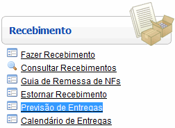
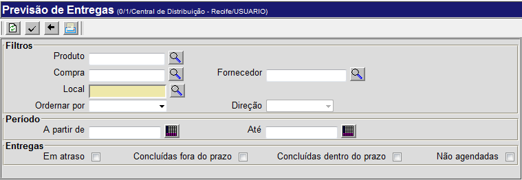
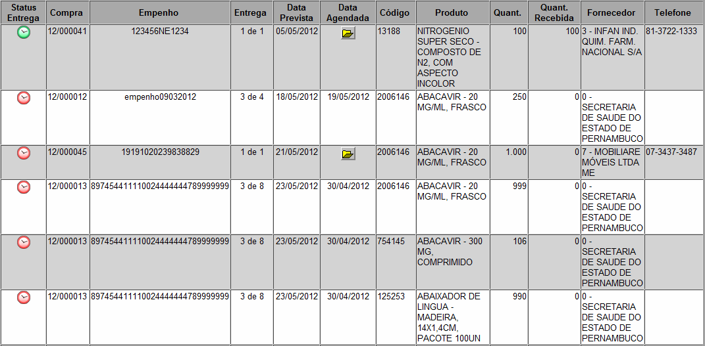
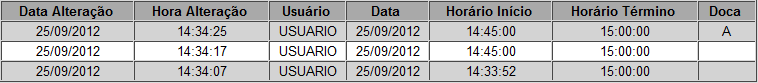
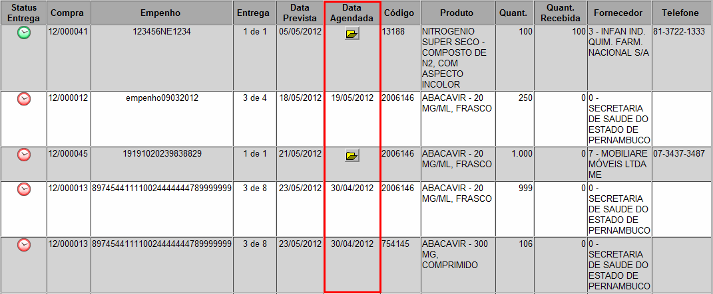

Previsão de Entregas [ Voltar ]
Utilize este formulário para
visualizar a programação de entregas das ordens de compra
aguardando recebimento. Aqui, o usuário também poderá agendar as
entregas previstas para uma outra data ou horário agendada com o
fornecedor.
O formulário "Previsão das Entregas"
encontra-se dentro do menu "Recebimento".

Ao clicar no formulário, a seguinte tela será
exibida:

Siga os passos abaixo para gerar uma lista de entregas pendentes.
1º Passo: configure os filtros
para esta previsão. O campo "Local" é obrigatório. Os filtros disponíveis são:
- Produto.
Para previsão de entregas para um determinado, informe-o aqui. Se
necessário, clique no botão
 para selecioná-lo a partir de uma listagem de produtos cadastrados.
para selecioná-lo a partir de uma listagem de produtos cadastrados.
- Compra.
Para listar entregas pendentes de uma determinada ordem de
fornecimento, digite aqui o
código da mesma. Se necessário, clique no botão
para selecionar uma das ordens de compra cadastradas.
- Fornecedor.
Para entregas de um fornecedor específico. Se necessário,
clique no botão
para selecioná-lo a partir de uma listagem de produtos cadastrados.
- Local. Informe aqui o local para o qual deseja visualizar a presvisão de entregas. Se desejar,
clique no botão
para selecioná-lo a partir do cadastro de locais.
- Ordenar por. Selecione aqui a forma de ordenamento desejada para a previsão: por Data Prevista ou por Data Agendada.
- Direção. Se um modo de ordenamento tiver sido selecionado no campo "Ordenar por", você pode selecionar aqui se deseja que as previsões sejam ordenadas de forma Crescente ou Decrescente.
- A
partir de / Até. Utilize estes campos para determinar um
período para a pesquisa. Clique no botão
 para selecionar a data
desejada. Dicas para preenchimento de campos de data: para selecionar a data
desejada. Dicas para preenchimento de campos de data:
- Data
atual: digite o sinal . (ponto) e
pressione a tecla "Enter" para que o sistema retorne a data atual;
- Data
do mês corrente: digite o dia do mês e
pressione a tecla "Enter" para que o sistema retorne o mês e ano
correntes;
- Dias
a contar da data atual: digite o sinal + (mais) ou - (menos)
antes do número de dias em referência à data atual e pressione
a
tecla "Enter" para a data anterior ou posterior à data atual.
- Entregas em atraso. Marque esta opção para que a pesquisa retorne apenas entregas em atraso.
- Entregas concluídas fora do prazo. Marque esta opção para visualizar apenas entregas concluídas fora do prazo.
- Entregas concluídas dentro do prazo. Marque esta opção para retornar engras concluídas dentro do prazo.
- Entregas não agendadas. Marque esta opção para que a pesquisa retorne apenas entregas não agendadas.
2º Passo: clique no botão  para gerar a listagem de
entregas previstas. para gerar a listagem de
entregas previstas.

As entregas podem ser exibidas com ícones diferentes, a depender de sua situação. Veja abaixo a legenda de ícones:
|
Verde: entrega realizada. |
|
Vermelho: entrega em atraso. |
|
Laranja: entrega prevista. |
|
Amarelo: entrega agendada. |
Observações:
- As entregas que caem em Sábados, Domingos e feriados
devem ser consideradas para o próximo dia útil.
- Somente são consideradas na consulta as ordens de
fornecimento processadas e com saldo pendente para recebimento.
- A
previsão de entregas é calculada com base no campo 'Data de Entrega do
Empenho', informado na ordem de fornecimento. As ordens de fornecimento
que não possuem essa informação não aparecem na previsão de entregas.
Agendar nova data de entregaPara agendar uma nova data de entrega combinada com o Fornecedor, siga os passos abaixo:
1º Passo: clique no botão  contido no campo "Data Agendada" do número de compra desejado. O botão [Agendar] dará acesso ao formulário "Agendamentos de Entrega para a Ordem de Compra". contido no campo "Data Agendada" do número de compra desejado. O botão [Agendar] dará acesso ao formulário "Agendamentos de Entrega para a Ordem de Compra".
Observação: note que, abaixo do histórico de alterações da quantidade de cada um dos produtos da entrega, há uma segunda tabela, onde são exibidas as alterações que a entrega como um todo sofreu (por exemplo, alteração do local ou do horario da entrega).

Caso
a entrega já tenha sido recebida, os dados desta tela estarão
disponíveis apenas para leitura. Se já houver um agendamento
cadastrado, em vez do botão [Agendar], será exibida a data agendada no campo "Data Agendada" na tela "Previsão de Entregas" (ver imagem abaixo).

2° Passo: preencha os dados para agendamento. Os campos em amarelo são obrigatórios.- Data. Insira aqui a data agendada para a entrega. Clique no botão para selecionar a data
desejada. Dicas para preenchimento de campos de data:
- Data
atual: digite o sinal . (ponto) e
pressione a tecla "Enter" para que o sistema retorne a data atual;
- Data
do mês corrente: digite o dia do mês e
pressione a tecla "Enter" para que o sistema retorne o mês e ano
correntes;
- Dias
a contar da data atual: digite o sinal + (mais) ou - (menos)
antes do número de dias em referência à data atual e pressione
a
tecla "Enter" para a data anterior ou posterior à data atual.
- Horário Início / Término. Informe nestes campos o período combinado para a entrega. Os horários informados devem estar entre 00:00 e 23:59.
- Doca. Se desejar, especifique aqui a doca para a entrega.
- Observações. Deposite aqui qualquer informação adicional sobre a entrega.
3° Passo: clique no botão  para salvar o agendamento. para salvar o agendamento.
Ir
para o topo da página |